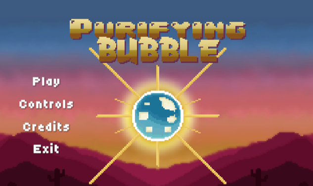
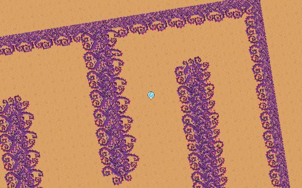
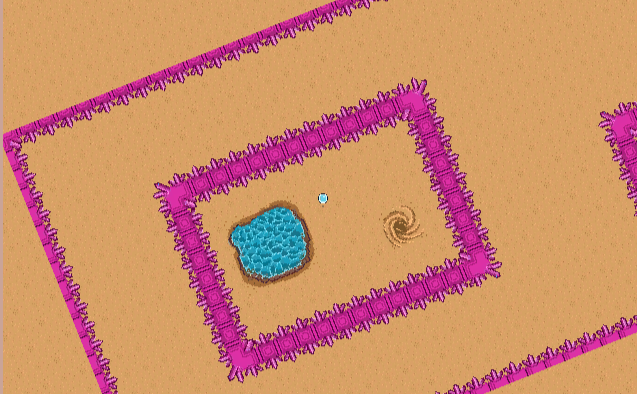
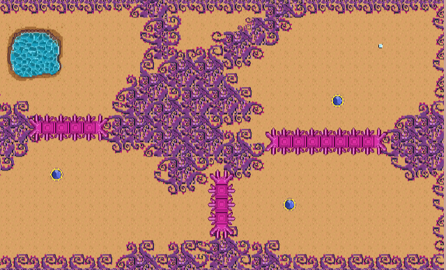

PurifyingBubble was developed during a 3-day Game Jam, where the goal was to design and deliver a complete, playable experience within a very limited timeframe.
The player controls a bubble traveling through a desert to purify a corrupted oasis. Movement is physics-based, and instead of directly controlling the character, the player rotates the world to change the bubble's direction. Throughout the maze, players must avoid deadly thorns while using environmental mechanics and temporary abilities to safely reach the goal.
Game Designer, Gameplay Programmer, Level Designer
I contributed to both the game's design and programming, implementing several of its core gameplay systems. My responsibilities included:
The greatest challenge was delivering a polished and enjoyable experience within only three days. Because of the extremely limited timeframe, every feature had to be carefully prioritized. This required making quick design decisions, focusing on the core gameplay loop, and continuously balancing scope against available development time.
Working under these constraints strengthened my ability to prototype quickly while maintaining code organization and gameplay quality.
This Game Jam reinforced the importance of effective planning and scope management. Rather than trying to build a large game, I learned that a simple concept executed well can result in a much stronger player experience. Careful prioritization and a clear development plan allowed our team to make the best use of the limited time available.
Developing several interconnected gameplay systems in such a short period helped me better understand how small changes can affect the overall player experience. It also reinforced the importance of continuously testing new features during development, quickly reproducing issues, and validating gameplay after every implementation to maintain stability despite rapid iteration.



